A documentary film · 2026
碎 片 新 生
Jingdezhen produces hundreds of thousands of tons of fired porcelain waste every year — and fired ceramic never decays. This film follows the people unburying it, and asks what a broken bowl can still become.
Written, directed and produced by Ziyang Xu · Jingdezhen, Jiangxi · Chinese-English bilingual subtitles
The film
Shards Reborn — full version (11:14). Chinese-English bilingual subtitles. Also streaming in the playlist below.
Five cuts
Same story, five ways in: a two-minute entry, the studio experiment on its own, the complete documentary, a second cut released as a premiere — and Holding You Together, the installation the reclaimed material ends up in.
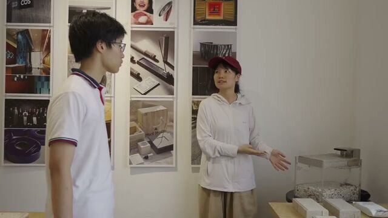
▶2:44The whole arc in under three minutes: the problem, the people, the experiment, and the question. Start here.
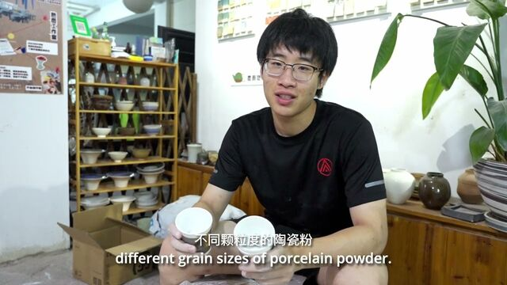
▶4:16The studio experiment on its own: crushing, sieving, mixing ratios, and firing 120 test specimens.
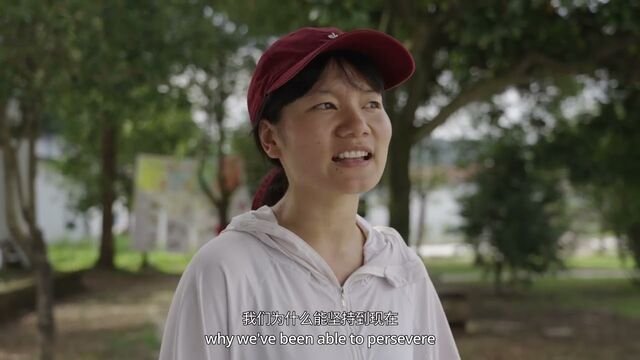
▶11:14The complete documentary: the city and its buried waste, Yi Design and Xun Studio, and what happens after porcelain breaks.
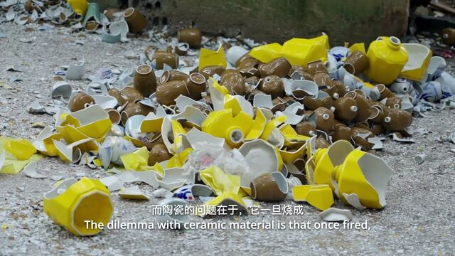
▶PremiereA second cut of the same story, released as a YouTube premiere.
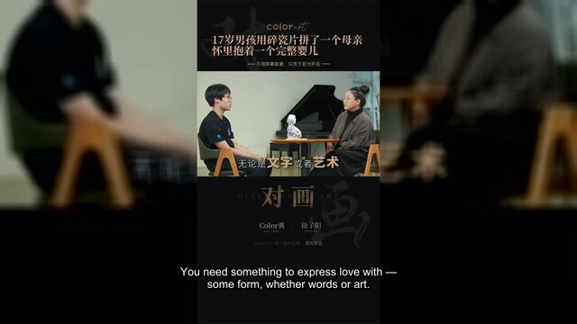
▶1:24The installation the reclaimed material ends up in: a fractured mother of collected shards holding a smooth high-white baby.
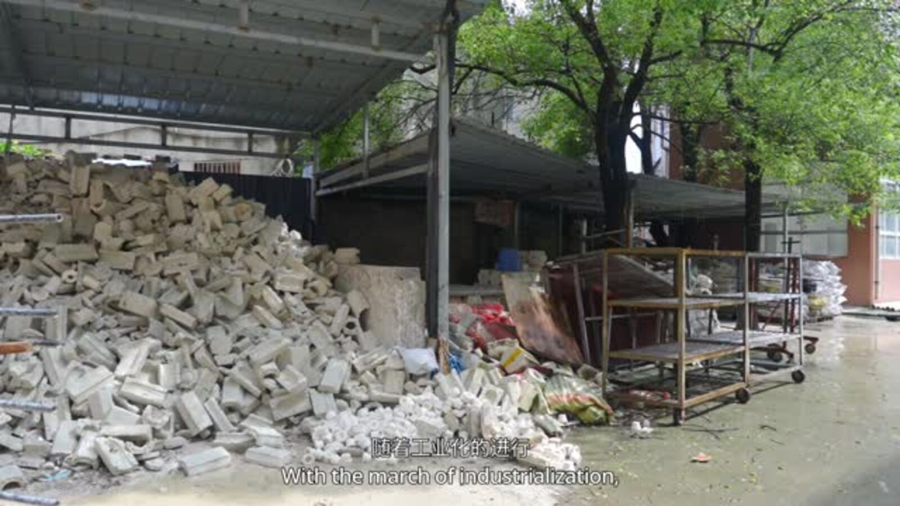
01 · The city
Jingdezhen today looks busier than ever — modern landmarks beside Taoxichuan's old factories, Sanbao turning into a destination. Yet the city also produces hundreds of thousands of tons of fired porcelain waste every year: defective pieces shattered and buried under old kilns, churned up again by roadworks. Fired ceramic resists decomposition — a broken bowl can last centuries. Durability was once porcelain's greatest virtue; once discarded, that virtue becomes an intractable problem.
Defective wares, factory scrap and buried shards: the material the film follows.
02 · The people
Yi Design — founded by designer Yin Yi and Caroline Cheng of The Pottery Workshop — press recycled shards into permeable bricks, furniture and design objects, and have stayed unprofitable on purpose. Xun Studio ask a more basic question: can ceramic that has already vitrified once become raw material again? Their answer is unstable ratios, high breakage — and a second firing that hands porcelain a new life as a brick, a tabletop, a wall.
Recycled ceramic tiles and the studios testing what the material will still do.
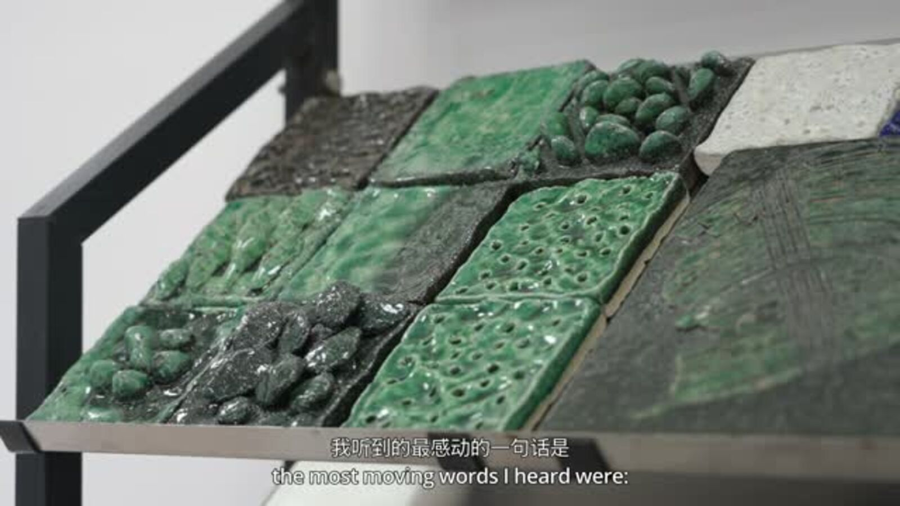
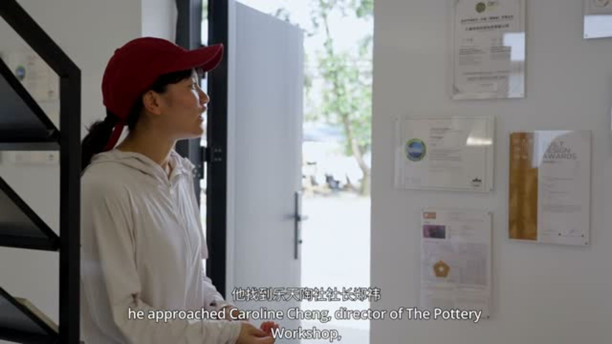
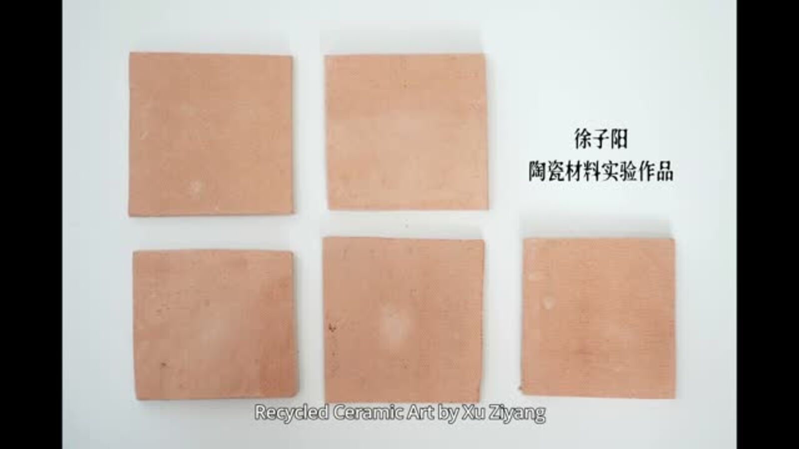
03 · The experiment
Crushed discarded shards, sieved the powder twice, mixed two grain sizes at three ratios, and fired 120 test specimens. Only 20 came out intact, and the usable ceiling sat around 10% powder. The films end where my own work begins. Machines are designed for perfection; I am still interested in the crooked rim.
Twelve test bodies, one honest yield curve — the studio experiment at the end of the film.
From experiment to installation
The experiments did not end at a yield table. Using the same reclaimed-porcelain method, I built the installation Holding You Together.
In this installation, I explore how war breaks families apart through the contrast between a fractured mother and an intact infant. I sculpted the mother from stone clay and covered her torso with collected porcelain shards, while shaping and firing the baby as a smooth ceramic form. Her worn face and broken body contrast with the infant resting peacefully in her arms. I placed them among bricks, broken wood, and a painted backdrop to suggest a home damaged by war. By reusing discarded porcelain, I wanted the fragments to convey both the mother's suffering and her hope to protect her child's future.
Holding You Together — reclaimed porcelain on stone clay, sculpted and fired by Ziyang Xu.
▶ Watch Holding You Together (1:24)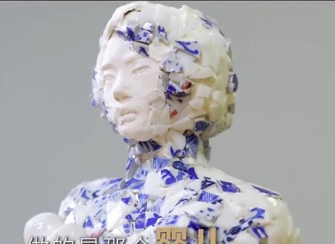
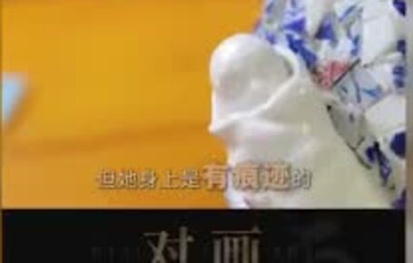
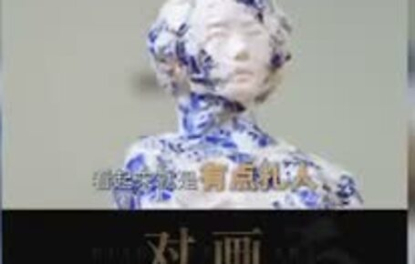
“Always do the right thing,
no matter how difficult it is.”
— the words the filmmaker says moved him most, in the words of the recyclers who keep going